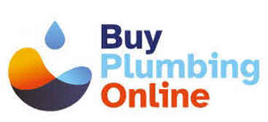
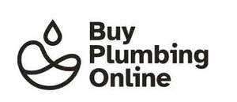
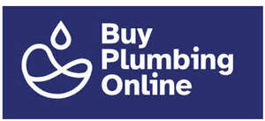

Trade Mark Journal No.2026/010 6 March 2026
UK00004342219 18 February 2026 (35)
Mark 1

Mark 2

Mark 3

- Class 35
- Advertising; business management; business administration; office functions; database management services; data processing; commercial information services; provision of business information; business consultancy and advisory services; business management and organisation consultancy; personnel management consultancy; personnel recruitment; business management assistance; business research; provision of product information; presentation of goods on communication media for retail purposes; demonstration of goods; organisation of exhibitions and trade fairs for commercial or advertising purposes; sales promotion for others; procurement services for others; direct mail advertising and dissemination of advertising matter; distribution of samples; efficiency expert services; data processing and dissemination; processing of purchase orders; preparation of invoices; pricing analysis; performance measurement services; computerised stock ordering and stock management; inventory management services; computerised inventory control; stock control services; stock location services; data processing services; organisation, operation and supervision of loyalty and incentive schemes; retail services connected with the sale of civil engineering, building and construction materials; retail services connected with the sale of electrical engineering, building and construction materials; retail services connected with the sale of fibre optic, telecommunication, electrical, building and construction materials; retail services connected with the sale of chemicals used in industry, science and photography, as well as in agriculture, horticulture and forestry, unprocessed artificial resins, unprocessed plastics, manures, fire extinguishing compositions, tempering and soldering reparations, chemical substances for preserving foodstuffs, tanning substances, adhesives used in industry, solvents, fluxes, damp proofing membranes and preparations, mastics, industrial adhesives for use in metal working, plumbing and building, flushing agents for heating systems, chemical additives for boilers, water treatment chemicals, chemical compositions for use in construction, filtering media of chemical and non-chemical substances, putties, fillers and pastes for use in industry and construction, paints, varnishes, lacquers, preservatives against rust and against deterioration of wood, colorants, mordants, raw natural resins, metals in foil and powder form for use in painting, decorating, printing and art, thinners and thickeners for coatings, dyes and inks, additives for paints, bleaching preparations and other substances for laundry use, cleaning, polishing, scouring and abrasive preparations, non-medicated soaps, perfumery, essential oils, non-medicated cosmetics, non-medicated hair lotions, non-medicated dentifrices, abrasives, sandpaper, sand cloths, sanding gloves, descaling preparations, polishing preparations, industrial oils and greases, lubricants, dust absorbing, wetting and binding compositions, fuels (including motor spirit) and illuminants, candles and wicks for lighting, industrial oils and greases, lubricants, dust absorbing, wetting and binding compositions, fuels (including motor spirit) and illuminants, candles and wicks for lighting, electrical energy from renewable sources, oils for preserving concrete and masonry, common metals and their alloys, ores, metal materials for building and construction, transportable buildings of metal, non-electric cables and wires of common metal, ironmongery, small items of metal hardware, pipes and tubes of metal, metal containers for storage or transport, safes, ores, building and construction materials and elements of metal, railway materials, metal access covers and chambers, metal gratings, hoses, valves, drainage plates, channels, profiles, courses and pipes of metal, non-electric ducting, conduits and installations of metal, downpoles of metal for the ducting of wires, manifolds of metal for pipelines, high-pressure pipelines of metal, branching tubes of metal for pipelines, metal valves for controlling the flow of fluids or gases in pipelines, tanks of metal, separation tanks of metal, metal hardware, nuts, bolts and fasteners, locks and keys, welding and soldering material, cables, wires and chains, doors, gates, windows and window coverings of metal, structures of metal, signs and information displays, ladders and scaffolding, containers and transportation and packaging articles of metal, metal shower enclosures, metal handrails for baths and showers, bathroom fittings of common metal or common metal alloys, metallic bathroom tiles, towel hooks and towel rails, robe hooks of metal, towel rings and rails of metal, baskets of metal, bath racks of metal, shelves of metal, toilet brush holders of metal, construction equipment, machines and machine tools, motors and engines (except for land vehicles), machine coupling and transmission components (except for land vehicles), agricultural implements other than hand-operated, incubators for eggs, automatic vending machines, pumps, compressors and fans, electric pumps, valves, water pumps, shower pumps, generators, construction equipment, moving and handling equipment, machines and machine tools for treatment of materials, cutting, drilling, abrading, sharpening and surface treatment equipment, power tools, power operated plumbing snakes, machinery and tools for cutting, stripping and laying of pipes and cables, engines, powertrains, and machine parts, and controls for the operation of machines and engines, dispensing machines and guns, fibre blowing machines, butt fusion and electrofusion tooling and equipment, hand tools and implements (hand-operated), cutlery, side arms, razors, hand tools and implements, hand-operated tools and implements for treatment of materials, and for construction, repair and maintenance, lifting tools, scientific, nautical, surveying, photographic, cinematographic, optical, weighing, measuring, signalling, checking (supervision), life-saving and teaching apparatus and instruments, apparatus and instruments for conducting, switching, transforming, accumulating, regulating or controlling electricity, apparatus for recording, transmission or reproduction of sound or images, magnetic data carriers, recording discs, compact discs, DVDs and other digital recording media, mechanisms for coin-operated apparatus, cash registers, calculating machines, data processing equipment, computers, computer software, fire-extinguishing apparatus, electrical flexes, wires and cables, electrical wiring accessories, plugs, plug sockets, switches, switch boxes, protection devices for electric circuits, fuse boxes, safety fuses, connections, switchgear, transformers, earthing accessories, fuses,, fibre optics, fibre optic cables, couplings, panels, receptors, junctions, sheaths and sleeves, telecommunication equipment and apparatus, control units for electrical appliances, cable and extension reels for use therewith, circuit breakers, socket outlets for coaxial cable plugs, conduit and housings for electric cables, junction boxes, earth sleeves for cable, control apparatus and instruments for use with or being parts of heating or water supply installations, light switches, light pulls, protective and safety equipment, head protection and eye protection, protective clothing, footwear and headgear, safety clothing, footwear and headgear, safety gloves, ducting for electrical cables, measuring, detecting and monitoring instruments, indicators and controllers, sensors and detectors, meters and meter boxes, meter modules, street cabinets, testing and quality control devices, cable and pipe location devices, stop watches, measuring, counting, alignment and calibrating instruments, controllers (regulators), thermostats, timers, educational and training computer software programs, computerised database, downloadable electronic publications, downloadable electronic training and educational publications, apparatus and installations for lighting, heating, cooling, air conditioning, steam generating, cooking, refrigerating, drying, ventilating, water supply and sanitary purposes, sanitary ware, flues and installations for conveying exhaust gases, sanitation equipment, sanitary and bathroom installations, bathroom suites, bathroom fixtures and fittings, basin, bath, bidet, sink, toilet and shower installations, shower systems, basins, baths, bidets, sinks, toilets, showers, spa baths, whirlpools, bath panels and shower screens, bath fillers, bath wastes, shower cubicles, enclosures, cabinets, stalls, doors, shower screens, panels, shower trays and cases, shower heads and spray heads, brackets for supporting shower heads and spray heads, shower spray sets, shower mixing valves, taps, mixers and faucets, bath/shower mixers, basin mixers, spouts, diverters, plumbing fixtures, water purification, desalination and conditioning installations, sterilisation, disinfection and decontamination equipment, filters for industrial use, irrigation systems, water pressure tanks, septic tanks, valves, burners, boilers and heaters, space heaters, water heaters, shower heaters, towel heaters, heated towel rails, immersion heaters, cylinders, radiators, radiator valves, shower valves, isolating valves, safety valves, fireplaces, underfloor heating, solar plates and panels, solar cylinders, solar thermal collectors, water tanks, toilet tanks, flushing tanks and lids for toilet tanks and flushing tanks, fans, extractor fans, extractor unit (ventilation), regulating and safety apparatus for water or gas apparatus and pipes, waste assemblies and fittings for baths, basins and sanitary ware, pipes, hoses and connector parts of bath, basin, shower and sink plumbing installations, shower hoses, toilet seats, toilet bowls, cisterns, cistern levers, plugs and chains for basins, showers, baths and bidets, vanity units being wash hand basins, vanity units incorporating basins (connected to the water supply), lighting apparatus, wall lights, ceiling lights, light fittings, metal shower enclosures, industrial treatment installations, regulating and safety accessories for water and gas installations, lighting reflectors, unprocessed and semi-processed rubber, gutta-percha, gum, asbestos, mica and substitutes for all these materials, plastics and resins in extruded form for use in manufacture, packing, stopping and insulating materials, flexible pipes, tubes and hoses, not of metal, rubber, gutta-percha, gum, asbestos, mica and goods made from these materials, seals, sealants and fillers, elastomeric sealants in the form of extrudable pastes for joints, joint sealants, silicone sealants, insulation and barrier articles and materials, thermal, electrical and acoustic insulation articles and materials, fire resistant and fire preventative articles and materials, products in the nature of sealants, silicone rubber sealants, insulating mastics, sealing compounds, adhesive tapes, strips, bands and films, flexible pipes not of metal, pipes, hoses and tubes not of common metal, pipe gaskets, pipe jackets, pipe muffs, joint packing for pipes, junctions for pipes, reinforcing materials for pipes, fastenings, connectors, cleats, couplings, clips, pipe clips, hose and tubes, pipe saddles, plastics in the form of rods, bars, sheets and shaped sections, pipes, tubes, and hose and fittings therefor, sleeving for electrical cable, cable and extension reels for use therewith, filters and filtering materials, waterproofing articles and materials, building materials (non-metallic), non-metallic rigid pipes for building, asphalt, pitch and bitumen, non-metallic transportable buildings, monuments, not of metal, building and construction materials and elements, not of metal, railway materials, pipes, tubes and valves, doors, gates, windows and window coverings not of metal, structures not of metal, signs and information displays, scaffolding, non-metallic access covers and chambers, non-metallic grating, non-metallic drainage installations, channels, courses and pipes, non-woven fabrics for land drainage, non-electric, non-metallic ducting installations, tanks, tar and asphalt, stone, rock, clay and minerals, timber, wood and artificial wood, sealants, roofing, flooring, tiles, furniture, mirrors, picture frames, containers, not of metal, for storage or transport, unworked or semi-worked bone, horn, whalebone or mother-of-pearl, shells, meerschaum, yellow amber, furniture for kitchens, bedrooms and bathrooms, non-metallic hardware, non-metallic wall plugs, cleats and clips, pipe clips, containers and closures, ladders, fastening, securing and locking devices, fasteners, fixings, fixing plugs and anchors, connectors, securing devices, pipe or cable clips, cleats, fixing plugs, coupling devices, joints, ball-joints, junctions, screws, bolts, locks, nuts, rivets, nails, clips, pins, collars, sleeves, clamps, rod ends, clevises, anchors, expansion plugs, frame anchors, frame fixings, hammer fixings, hollow wall anchors, anchor devices, sleeve anchors, drop-in anchors, cable drums (non-mechanical), mirrored tiles, non-metallic towel hooks and rails, shower curtain rails, shelves and racks, shelves of metal, household or kitchen utensils and containers, combs and sponges, brushes, except paintbrushes, brush-making materials, articles for cleaning purposes, unworked or semi-worked glass, except building glass, glassware, porcelain and earthenware, bathroom fittings, soap boxes, soap dishes, soap dispensers, sponge holders, toothbrush holders, toilet utensils, toilet roll holders, towel rails, towel rings, bath racks of metal, toilet brush holders of metal, robe hooks, textiles and substitutes for textiles, household linen, curtains of textile or plastic, toilet covers, shower curtains, towels and flannels, clothing, footwear, headgear, work shoes, work boots, work overalls, carpets, rugs, mats and matting, linoleum and other materials for covering existing floors, wall hangings (non-textile), shower mats, bath mats, and parts and fittings for all the aforesaid goods; consultancy and advisory services relating to the aforesaid services.
Wolseley UK Limited
Representative: Barker Brettell LLP